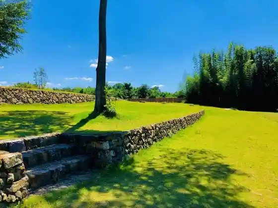
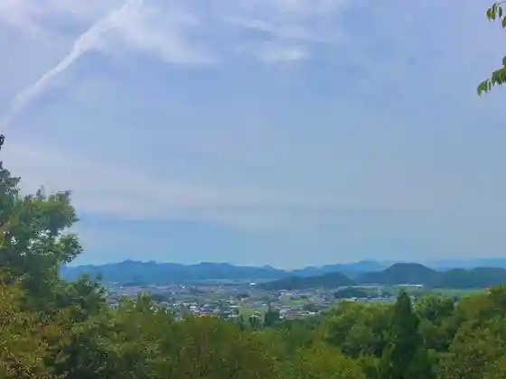
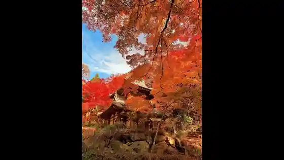
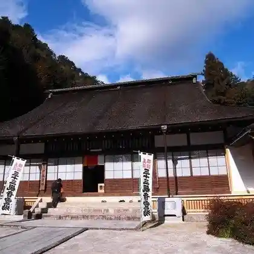

River Park Tomipaku
Tomika, Gifu · 0574-54-2114 · Official / source link

Roadside Station Han Nuno Sato no Sato Tomika
Tomika, Gifu · 0574-54-1171 · Official / source link
Han Nunogaoka Park
Tomika, Gifu · 0574-54-2886 · Official / source link

Kiyomizudera
Tomika, Gifu · Official / source link

Ryufuku Tera
Tomika, Gifu · 0574-54-3294 · Official / source link

Yu Ta Chausuyama Burial Mound
Tomika, Gifu · 0575-54-2177 · Official / source link
Matsui Ya Shuzo Museum
Tomika, Gifu · 0574-54-3111 · Official / source link
Tomika B&G Kaiyo Center
Tomika, Gifu · 0574-54-2886 · Official / source link
Tomika Local History Museum
Tomika, Gifu · 0574-54-1443 · Official / source link
Toka Tera
Tomika, Gifu · 0574-54-2639 · Official / source link
(Ari) Matsui Ya Shuzo Ba
Tomika, Gifu · 0574-54-3111 · Official / source link
I Koichi Go Burial Mound (Hi Tsuka)
Tomika, Gifu · 0574-54-2177 · Official / source link
Fureai Saron Dodan
Tomika, Gifu · 0574-54-1318 · Official / source link
Tateiwa
Tomika, Gifu · 0574-54-2177 · Official / source link
Shimizudani Kawa Park
Tomika, Gifu · 0574-54-2177 · Official / source link
Rei Mine Tera
Tomika, Gifu · 0574-54-2177 · Official / source link
Uru Ta Burial Mound
Tomika, Gifu · 0574-54-2177 · Official / source link
Enichi Yama Iseki (Ebi Yama Iseki)
Tomika, Gifu · 0574-54-2177 · Official / source link
Hachi Tatami Iwa
Tomika, Gifu · 0574-54-2177 · Official / source link
Daibai Tera
Tomika, Gifu · 0574-54-2177 · Official / source link
Iwa Shrine
Tomika, Gifu · 0574-54-2177 · Official / source link